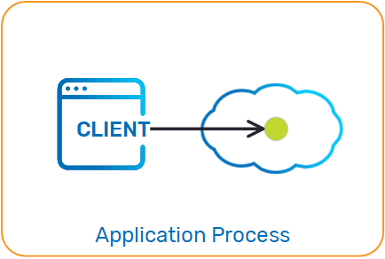
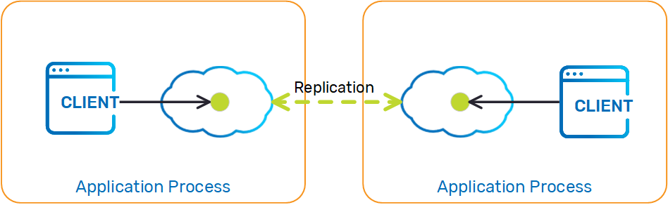
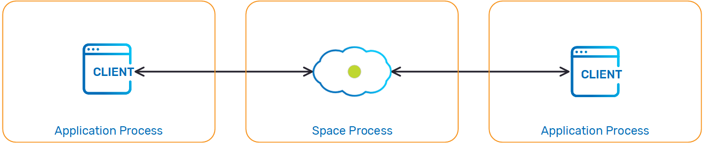

This section explains how to create and configure a Space, and how to interact with it using the Space API.
A Space is a logical in-memory service, which can store entries of information. An entry is a domain object; In C#, an entry can be a simple PONO or a SpaceDocument. When a client connects to a Space, a proxy is created that holds a connection which implements the Space API. All client interaction is performed through this proxy.
The Space is accessed via a programmatic interface that supports the following main functions:
For more information, see the Operations page.
A Space proxy is created to interact with the Space. Several configuration parameters are available.
For more information, see the Configuration page.
A client communicating with a an embedded Space performs all its operations via local connection. There is no network overhead when using this approach.

The following is an example of how to create an embedded Space. The EmbeddedSpaceFactory is used to configure the Space URL:
// Create the ISpaceProxy
ISpaceProxy spaceProxy = new EmbeddedSpaceFactory("mySpace").Create();
<?xml version="1.0" encoding="utf-8" ?>
<configuration>
<configSections>
<section name="ProcessingUnit" type="GigaSpaces.XAP.Configuration.ProcessingUnitConfigurationSection, GigaSpaces.Core"/>
</configSections>
<ProcessingUnit>
<EmbeddedSpaces>
<add Name="mySpace"/>
</EmbeddedSpaces>
</ProcessingUnit>
</configuration>
The embedded Space can be used in a distributed architecture, such as a replicated or partitioned clustered Space:

A simple way to use the embedded Space in a clustered architecture is by deploying a clustered Space, or packaging your application as a Processing Unit and deploying it using the relevant SLA.
A client communicating with a remote Space performs all its operations via a remote connection. The remote Space can be partitioned (with or without backups) or replicated (based on synchronous or asynchronous replication).
The number of backups per partition is zero or one.

The following is an example of how a client application can create a proxy to interacting with a remote Space:
// Create the ISpaceProxy
ISpaceProxy spaceProxy = new SpaceProxyFactory("mySpace").Create();
<?xml version="1.0" encoding="utf-8" ?>
<configuration>
<configSections>
<section name="ProcessingUnit" type="GigaSpaces.XAP.Configuration.ProcessingUnitConfigurationSection, GigaSpaces.Core"/>
</configSections>
<ProcessingUnit>
<SpaceProxies>
<add Name="mySpace" />
</SpaceProxies>
</ProcessingUnit>
</configuration>
For a full description of the Space URL properties. see the Configuration page.
When working with a remote Space, the Space may become unavailable (network problems, processing unit relocation, etc.). For information on how such disruptions are handled and configured, refer to Proxy Connectivity.
Read operations implicitly . The local cache is loaded on demand or when you perform a Read operation, and is updated implicitly by the Space.
The following is an example of a ISpaceProxy construct with a local cache:
// Create the ISpaceProxy
ISpaceProxy spaceProxy = new SpaceProxyFactory("mySpace").Create();
// Create Local Cache
ISpaceProxy localCache = GigaSpacesFactory.CreateLocalCache(spaceProxy);
Read or ReadMultiple operations implicitly. The local view is loaded on startup, and is updated implicitly by the Space.

The following is an example of a ISpaceProxy construct with a local cache:
ISpaceProxy spaceProxy = new SpaceProxyFactory("mySpace").Create();
//define names for the localView
const String typeName1 = "com.gigaspaces.Employee";
const String typeName2 = "com.gigaspaces.Address";
//Create an array of views and initialize them with the select criteria
View[] views = new View[] { new View(typeName1, "DepartmentNumber=1"), new View(typeName2, "") };
//Create the local view using the GigaSpacesFactory class.
IReadOnlySpaceProxy localView = GigaSpacesFactory.CreateLocalView(spaceProxy, views);
A secured Space should be configured with a security context so that it can be accessed (when connecting to it remotely). See the following example of how this can be configured:
SecurityContext securityContext = new SecurityContext ("userName", "password");
// Create the factory
SpaceProxyFactory factory = new SpaceProxyFactory ("mySpaceWithSecurity");
// Set the Cluster Info
factory.Credentials = securityContext;
//create the ISpaceProxy
ISpaceProxy proxy = factory.Create ();
// .......
proxy.Dispose ();
<SpaceProxies>
<add Name="MySpaceWithCustom">
<Properties>
<add Name=" security.username" Value="username"/>
<add Name=" security.password" Value="password"/>
</Properties>
</add>
</SpaceProxies>
The grid components are secured using the Security Administration.
For more information, see the Accessing a Secured Service Grid page.
When constructing a Space, you can provide Space Persistency extensions using a NHibernate configuration. The following is an example of how it can be defined:
<?xml version="1.0" ?>
<hibernate-configuration xmlns="urn:nhibernate-configuration-2.2" >
<session-factory>
<property name="dialect">NHibernate.Dialect.MySQLDialect</property>
<property name="connection.provider">NHibernate.Connection.DriverConnectionProvider</property>
<property name="connection.driver_class">NHibernate.Driver.MySQLDataDriver</property>
<property name="connection.connection_string">Server=localhost;Database=dotnetpersistency;User ID=root;CharSet=utf8</property>
<!--Disable the writing of all the SQL statments to the console-->
<property name="show_SQL">false</property>
<!--Disabled the validation of your persistent classes, allows using .NET properties and not getters and setters on your fields-->
<property name="use_proxy_validator">false</property>
<!--This will create the tables in the database for your persistent classes according to the mapping file.-->
<!--If the tables are already created this will recreate them and clear the data-->
<property name="hbm2ddl.auto">create</property>
</session-factory>
</hibernate-configuration>
The above example configures both a custom JDBC DataSource and a NHibernate SessionFactory, to define and use the NHibernateSpaceDataSource. The